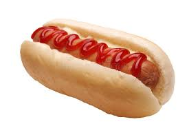

WELCOME TO HOTDOG

A hot dog (or hotdog) is a grilled or steamed sausage served in the slit of a partially sliced bun.
The sausage used is traditionally made from cured pork, beef, or a combination of the two, but
alternatives such as chicken, turkey, and vegetarian options are also popular.
Hot dogs are commonly garnished with mustard, ketchup, onions, mayonnaise, relish, sauerkraut,
and cheese.